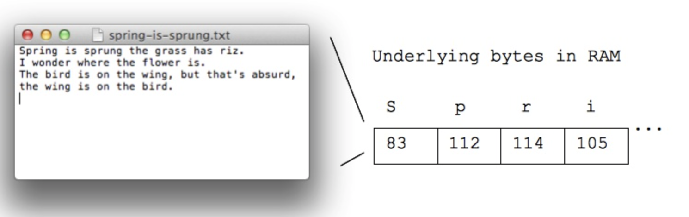

Bit, Byte, KB, MB, GB, TB, PB
Bit
A bit is a binary digit, the smallest unit of data stored on a computer.- A bit can hold only one of two values: 0 or 1, corresponding to the electrical values of off or on, respectively.
- Because bits are so small, you rarely work with information one bit at a time.
- Bits are usually assembled into a group of eight to form a byte.
- Everything in a computer is 0's and 1's.
Byte
A byte contains enough information to store a single ASCII character, like "A".- 1 byte = 8 bits
- e.g.: 0 1 0 1 1 0 1 0
- One byte can store one character, e.g. 'A' or 'x' or '$'
- All storage is measured in bytes, despite being very different hardware
- Bytes and Characters - ASCII Code
- ASCII is an encoding representing each typed character by a number
- Each letter is stored in a byte, as below 
- S is 83
- p is 112
- r is 114
- is is 105
- 100 typed letters take up 100 bytes
- One byte works well for individual characters, but computers are also good at manipulating numbers.
- Integers are typically stored with either 4 or 8 bytes
Kilobyte or KB
- Decimal: 1000 Bytes = 1 Kilobyte (KB) = \(10^3\)
- Binary: 1024 Bytes = 1 Kibibyte (KiB) = \(2^{10}\)
- Example: An email without images is about 2 KB
Megabyte or MB
- Decimal: 10002 Bytes = 1000 KB = 1 Megabyte (MB) = 1,000,000 Bytes = \(10^6\)
- Binary: 10242 Bytes = 1024 KB = 1 Mebibyte (MiB) = 1,048,576 Bytes = \(2^{20}\)
- Example: A high-quality digital picture is about 2-5 Megabytes.
Gigabyte or GB
- Decimal: 10003 Bytes = 1000 MB = 1 Gigabyte (GB) = 1,000,000,000 Bytes = \(10^9\)
- Binary: 10243 Bytes = 1024 MB = 1 Gibibyte (GiB) = 1,073,741,824 Bytes = = \(2^{30}\)
- Example: A hard drive might hold 750 GB.
Terabyte or TB
- Decimal: 10004 Bytes = 1000 GB = 1 Terabyte (TB) = 1,000,000,000,000 Bytes = \(10^{12}\)
- Binary: 10244 Bytes = 1024 GB = 1 Tebibyte (TiB) = 1,099,511,627,776 Bytes = \(2^{40}\)
- Example: You can buy 4 TB hard drives today.
Decimal vs. Binary Storage Units
Decimal (SI system: International System of Units)
- 1 Kilobyte (KB) = 1,000 bytes
- Based on powers of 10.
- Used by most storage device manufacturers (hard drives, SSDs, USBs).
- Example: A "500 GB" hard drive = \(500 \times 10^9\) bytes.
Here, kilo means 1,000, just like in kilometers (1 km = 1,000 meters).
Binary (IEC system: International Electrotechnical Commission)
- 1 Kibibyte (KiB) = 1,024 bytes
- Based on powers of 2.
- Used by most operating systems (Windows, Linux, macOS) when reporting file sizes.
- Example: 1 MiB (mebibyte) = 1,024 KiB = 1,048,576 bytes.
Here, "kibi" comes from kilo + binary, meaning \(2^{10}\).
Why the difference matters
If you buy a 1 TB hard drive, the manufacturer means 1 terabyte = 1,000,000,000,000 bytes (\(10^{12}\)).
But your computer may report it as about 931 GiB, because it divides by \(1,024^3\) instead of \(1,000^3\).
So the difference is in the base used:
- KB, MB, GB → Decimal (\(10^3, 10^6, 10^9\))
- KiB, MiB, GiB → Binary (\( 2^{10}, 2^{20}, 2^{30} \))
Quick Reference Table
| Unit | Decimal (SI) | Binary (IEC) | Approximate Size |
|---|---|---|---|
| Bit | - | - | Single 0 or 1 |
| Byte | 8 bits | 8 bits | One character |
| Kilobyte/Kibibyte | \( 10^3 \) (1,000) | \( 2^{10} \) (1,024) | Email without images |
| Megabyte/Mebibyte | \( 10^6 \) (1 million) | \( 2^{20} \) (1,048,576) | High-quality photo |
| Gigabyte/Gibibyte | \( 10^9 \) (1 billion) | \( 2^{30} \) (1,073,741,824) | Hard drive capacity |
| Terabyte/Tebibyte | \( 10^{12} \) (1 trillion) | \( 2^{40} \) (1,099,511,627,776) | Large hard drive |
| Petabyte/Pebibyte | \( 10^{15} \) (1 quadrillion) | \( 2^{50} \) (1,125,899,906,842,624) | Data center storage |
Reference
https://web.stanford.edu/class/cs101/bits-bytes.htmlhttps://en.wikipedia.org/wiki/Kilobyte#:~:text=In%20the%20International%20System%20of,The%20unit%20symbol%20is%20kB.